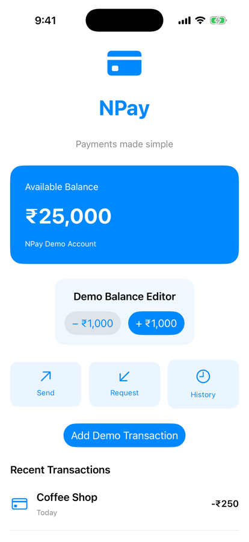
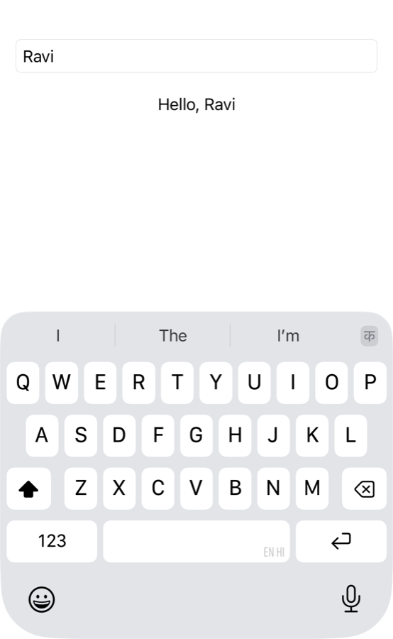
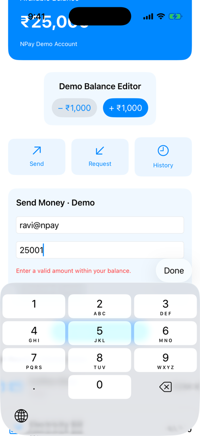

Unit 02 · Lesson 2.11
TextField, User Input,
Validation & Focus
Someone types 1500. How does it travel from the keyboard into Swift state, and keep the screen in sync?
Lesson 2.11 · Outcomes
By the end, you will be able to explain
TextField and why it needs a Binding
Keyboard → TextField → binding → @State
Why amounts start as String, never Double
Validation: keyboard hints are not validation
@FocusState, onSubmit, a Done button
NPay’s payment form, validated against the balance
Lesson 2.11 · Where we are
Today: NPay accepts input
Unit 02 · SwiftUI Fundamentals
ForEach and stable IDs.TodayA payment form: text input, validation, focus.Part 1
A payment form
Recipient, amount, continue
Part 1 · Our next NPay milestone (sections 1, 20)
Milestone 2.11: a validated payment form
- Recipient and Amount (₹) fields
- Continue Demo, enabled only when valid
- Prints the request
- No money moves; 2.12 simulates payments

Before: 2.10

ravi@npay, 1500: enabled
Part 2
TextField
Editable text needs a binding
Part 2 · The smallest TextField (sections 2–3)
Type Ravi; the Text follows
struct TextFieldExperiment: View {
@State private var name = ""
var body: some View {
VStack(spacing: 20) {
TextField("Enter your name", text: $name)
.textFieldStyle(.roundedBorder)
Text("Hello, \(name)")
}
.padding()
}
}| Text | TextField |
|---|---|
| Shows text | edits text |
a String value | a Binding<String> |
| no keyboard | keyboard and text input |
| read only | two-way data flow |
name = "R"
name = "Ra"
name = "Rav"
name = "Ravi"
- The field wrote
namevia the binding - The
Textre-rendered by itself

Hello, Ravi (with the keyboard)
Part 2 · Why TextField requires a Binding (section 5)
Read the value, write the edits
TextField("Recipient ID", text: recipient)swiftc, iOS 26.5 SDK
- Read the value to display it
- Write the value as the user types
$amountText: Binding<String>
Part 3
Keyboard to state
The system owns the keyboard
Part 3 · Keyboard to SwiftUI state (sections 4, 12) · conceptual
From a key to a visible update
- Tamil, Hindi: composition, several events
- Use platform text input, not raw key events
- A system experience, not a SwiftUI view
- Keep per-keystroke work cheap; debounce later
Part 4
Amounts as text
And never as Double
Part 4 · Why amounts start as Strings (sections 6, 8)
Keep the text; parse it carefully
"" → "1"
"1" → "15"
"15" → "150"
"150" → "1500"
- Holds intermediate text
- Empty, a lone ".", partial input
"12abc" → 12
"1,500" → 1
"-500" → -500
"" → nil
- Stops at the first bad character
- Also check syntax and rules
Double 0.1 + 0.2 == 0.3: false
(0.30000000000000004)
Decimal 0.1 + 0.2 == 0.3: true
- Never
Doubleas the source of truth - Decimal, or integer minor units (Unit 01)
Part 5
Keyboard types
A hint, not a boundary
Part 5 · .keyboardType() (section 7)
.decimalPad shapes the keyboard, not the input
TextField("Amount (₹)", text: $amountText)
.keyboardType(.decimalPad)- Asks for a digits-and-point keyboard
- Text can still arrive by paste, hardware keyboard, accessibility
Old amount: ""
New amount: 1500
(one change, no key presses)
- Validate independently of the keyboard

Decimal pad + Done
Part 6
Focus
@FocusState
Part 6 · Focus management (sections 9, 19)
Which field has the keyboard?
@FocusState private var focusedField: Field?
enum Field: Hashable { case recipient, amount }
TextField("Recipient ID (e.g. ravi@npay)", text: $recipient)
.focused($focusedField, equals: .recipient)
.submitLabel(.next)
.onSubmit { focusedField = .amount }
.toolbar { // on the form
ToolbarItemGroup(placement: .keyboard) {
Spacer()
Button("Done") { focusedField = nil }
}
}focused after return:
UITextField, placeholder Amount (₹)
_amountFocused: FocusState<Bool>
$amountFocused: Binding
- @State: the view’s own data
- @FocusState: which control is focused
Part 7
PaymentForm
Validated against the balance
Part 7 · Validate against the demo balance (sections 10, 17)
Syntax, then rules, then the balance
private var isValidAmount: Bool {
let pattern = #"^[0-9]+(\.[0-9]{1,2})?$"#
guard amountText.range(of: pattern,
options: .regularExpression) != nil
else { return false }
guard let amount = Decimal(string: amountText,
locale: Locale(identifier: "en_US_POSIX"))
else { return false }
return amount > 0
&& amount <= Decimal(availableBalance)
}
// isValid: recipient not blank && isValidAmount
// Button("Continue Demo") { … }.disabled(!isValid)- 25500 invalid at ₹25,000; + ₹1,000 → enabled
| Amount | Ran |
|---|---|
| 1500 | valid |
| 25000 | valid |
| 25001 | invalid |
| 0 | invalid |
| 12.345 | invalid |
| abc | invalid |
| -500 | invalid |
Balance ₹25,000; Mac, swiftc

25001: message, disabled
Part 7 · Three responsibilities (sections 11, 16)
Where today’s validation sits
- PaymentForm owns its input and focus state
- Local validation, then prints a request
- Does not replace backend validation
- No financial transaction happens
Part 8
Debugging and checkpoint
Watch the values change
Part 8 · Debugging TextField (sections 15, 18, 20)
Values, not key presses
TextField("Amount (₹)", text: $amountText)
.keyboardType(.decimalPad)
.textFieldStyle(.roundedBorder)
.onChange(of: amountText) { oldValue, newValue in
print("Old amount:", oldValue)
print("New amount:", newValue)
}- Keyboard → TextField → Binding → @State
- → Validation → button state → update
typed: 4 changes (1, 15, 150, 1500)
pasted: 1 change (1500)
Demo payment request
Recipient: ravi@npay
Amount: 1500
Lesson 2.11 · Recap
What to remember
TextField writes a binding
keyboard → binding → @State
Validate the value
keyboard type is only a hint
Focus is state too
@FocusState, onSubmit, Done
Review
Check your understanding
Check your understanding · 1 of 9
Why does TextField commonly take a Binding<String>?
- To read and write the editable text
- To create a new thread
- To store data in a database
It displays the value and writes each edit back; a plain String did not compile.
Common trap: Thinking the field keeps its own copy.
Check your understanding · 2 of 9
Does .keyboardType(.decimalPad) guarantee valid decimal input?
A paste delivered "1500" in one change without a key press; anything can be pasted.
Common trap: Treating the keyboard as validation.
Check your understanding · 3 of 9
What does @FocusState manage?
- Which control has focus
- Network state
- Application signing
onSubmit set it to .amount and the Amount field became first responder.
Common trap: Confusing it with @State.
Check your understanding · 4 of 9
Why is a String useful while the amount is being edited?
- It keeps intermediate text such as empty input and a lone decimal point
- It encrypts money
- It removes the need for validation
Typing 1500 passes through "", "1", "15", "150".
Common trap: Converting every keystroke to a number.
Check your understanding · 5 of 9
Should Double be the authoritative representation of money?
0.1 + 0.2 printed 0.30000000000000004; use Decimal or integer minor units.
Common trap: Assuming floating point is exact.
Check your understanding · 6 of 9
Does a disabled Continue button replace backend validation?
It is client-side convenience; trusted rules live on the backend.
Common trap: Trusting the client.
Check your understanding · 7 of 9
What happens when the TextField writes through $amountText?
- The state owner receives the updated String
- A new independent TextField state is created
- The app recompiles
onChange on the owner logged every new value.
Common trap: Expecting a separate copy in the field.
Check your understanding · 8 of 9
Without the regex check, what does Decimal(string: "12abc", locale: en_US_POSIX) return?
nil12- A crash
It stops at the first character it cannot use, which is why the form checks syntax first.
Common trap: Expecting strict parsing.
Check your understanding · 9 of 9
From Lesson 2.10: what decides whether 1,000 rows are built eagerly or lazily?
ForEach- The surrounding container
Identifiable
VStack built 1,000 row bodies, LazyVStack 12, List 9.
Common trap: Assuming ForEach is lazy.
Lesson 2.11 · Where this goes next
Where this goes next
| Lesson | Topic | Builds on today |
|---|---|---|
| 2.12 | Unit 2 integration & architecture review | connect the form to a local payment simulation; clean up the files; review Unit 2 |
| Later | Debouncing, async validation | expensive checks off the keystroke path |
Lesson 2.11 · Lab
Type, paste, validate
Run the text’s experiments A to E.
- A: remove
$fromtext: $recipient. - B:
.decimalPad→.numberPad. - C: amounts 0, -100, 12.345, 1500.
- D: recipient, then Next: where’s the focus?
- E: a Tamil recipient name.
- Paste an amount; compare the onChange log.
- The compiler error, explained
- Which amounts enabled Continue
- Your onChange log: typed vs pasted
Lesson 2.11 complete
TextField, User Input,
Validation & Focus
Next: Lesson 2.12 — Unit 2 Integration & Architecture Review